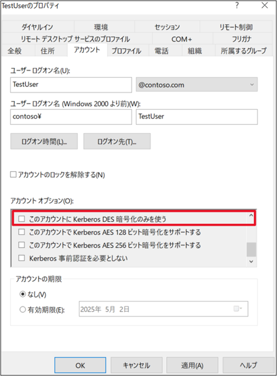
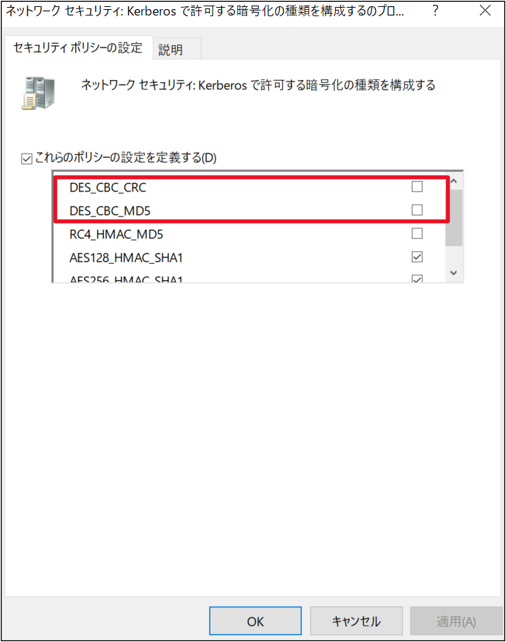

本記事はマイクロソフト社員によって公開されております。
こんにちは。Windows Commercial Support Directory Services チームです。
今回は、今後予定されている Kerberos 認証からの DES の削除についてご案内いたします。
2025 年 9 月のセキュリティ更新プログラムより、 Kerberos 認証から DES が完全に削除されます。
DES の削除が行われるまでに、利用環境の検知と、事前の無効化をご検討いただけますようお願いいたします。
なお、本記事は以下のブログをベースに要点を日本語でお纏めしておりますので、こちらも併せてご確認いただけますと幸いです。
Removal of DES in Kerberos for Windows Server and Client
1. DES 削除の背景
DES は 1970 年代に開発された古い暗号化方式であり、現在ではセキュリティの観点から複数の脆弱性が指摘されています。
計算性能の向上により、DES は現代の攻撃手法に対抗するには不十分となっており、米国立標準技術研究所 (NIST) を含む複数の標準化機関も廃止を推奨しています。
このような背景から、ユーザーおよびシステムのセキュリティ強化を目的として、Windows における Kerberos 認証からの DES 削除を決定しました。
2. DES 削除のスケジュールと影響範囲
2025 年 9 月にリリースが予定されている更新プログラムを Windows 11 24H2 / Windows Server 2025 へ 適用することで、Kerberos 認証における DES が完全に削除されます。
なお、現時点の予定では、Windows 11 24H2 / Windows Server 2025 未満のバージョンから DES が削除されることはありません。
3. DES の利用状況を確認する
DES の利用状況は、ドメイン コントローラーに記録されるセキュリティ イベント ID:4768 / 4769 から確認が可能です。
これらのセキュリティ イベントにて DES の利用状況を確認するためには、現行サポートされている OS バージョンにおいて、2025 年 1 月以降のセキュリティ更新プログラムを適用いただく必要がございますので、事前に適用状況をご確認ください。
各イベントの出力例は以下の通りです。
MSDS-SupportedEncryptionTypes の値が対象のアカウントが Kerberos 認証において利用可能な暗号化タイプであり、DES のみが記述されているアカウントについては DES が削除される前に是正対応が必要となります。
ID 4768
1 | ログの名前: Security |
ID 4769
1 | ログの名前: Security |
イベント テキストの詳細につきましては、以下の弊社公開情報をご参照ください。
4768(S, F): A Kerberos authentication ticket (TGT) was requested.
4769(S, F): A Kerberos service ticket was requested.
4. DES の無効化方法
Windows 7 ・ Windows Server 2008 R2 の時点で Kerberos 認証における DES の利用は既定で無効となっていましたが、管理者により手動で有効化することも可能な状態でした。
お客様の環境における DES の利用状況をご確認いただいた上、必要に応じて事前の無効化を実施いただけますようお願いいたします。
セキュリティ イベントから、 DES のみをサポートしているアカウントが無いことを確認します。
DES のみをサポートしているアカウントが存在する場合、対象のアカウントについて確認を行います。
Windows OS ではない場合、DES を利用しないための対応方法については、各デバイス側での確認が必要となります。[Active Directory ユーザーとコンピューター] にて、ユーザーオブジェクトやコンピューターオブジェクトの [アカウント] タブの [アカウント オプション] にて、[このアカウントに Kerberos DES 暗号化のみを使う] のチェックボックスがオンになっているアカウントが無いことを確認します。
コンピューターオブジェクトに適用されるグループポリシーオブジェクト(GPO)、またはローカルセキュリティポリシーにて以下のポリシーを設定している場合、 [DES_CBC_CRC] と [DES_CBC_MD5] のチェックが入っていないことを確認します。
GPO：
コンピューターの構成 -> ポリシー -> Windows の設定 -> セキュリティの設定 -> ローカル ポリシー -> セキュリティ オプション
ネットワーク セキュリティ : Kerberos で許可する暗号化の種類を構成する
ローカル セキュリティ ポリシー：
セキュリティの設定 -> ローカル ポリシー -> セキュリティ オプション
ネットワーク セキュリティ : Kerberos で許可する暗号化の種類を構成する

更新履歴
2025/05/09 : 本ブログの公開
2025/06/30 : グループ ポリシーの表記の修正